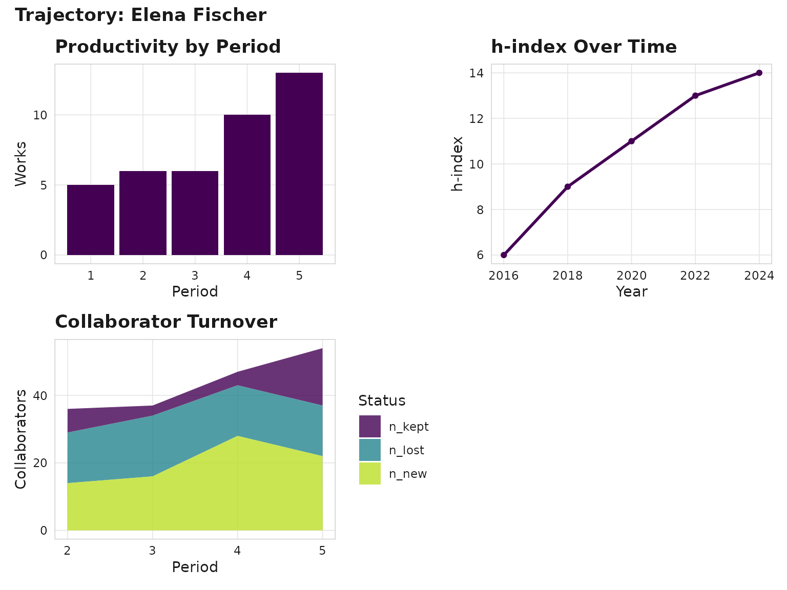

Equity Audit, Trajectory Analysis, and Corpus Chat
Source:vignettes/equity-trajectory-and-chat.Rmd
equity-trajectory-and-chat.RmdEquity and representation audit
scimapR includes built-in tools for auditing geographic, gender, funding, and open-access representation – with explicit confidence reporting and limitation caveats.
library(scimapR)
corpus <- sm_example_corpus(seed = 42)Geographic audit
geo <- sm_audit_geographic(corpus)
head(geo)
#> $distribution
#> # A tibble: 20 × 4
#> group count citations pct
#> <chr> <int> <int> <dbl>
#> 1 DE 77 1204 10.2
#> 2 AU 50 727 6.62
#> 3 FI 49 771 6.49
#> 4 NO 43 524 5.7
#> 5 IT 41 571 5.43
#> 6 GB 40 572 5.3
#> 7 CA 38 647 5.03
#> 8 DK 38 576 5.03
#> 9 NL 37 530 4.9
#> 10 BR 35 556 4.64
#> 11 CN 35 569 4.64
#> 12 CH 34 475 4.5
#> 13 IL 34 759 4.5
#> 14 JP 34 538 4.5
#> 15 IN 32 448 4.24
#> 16 FR 31 458 4.11
#> 17 KR 31 455 4.11
#> 18 US 29 501 3.84
#> 19 ES 24 350 3.18
#> 20 SE 23 223 3.05
#>
#> $gini
#> [1] 0.143
#>
#> $coverage
#> [1] 1
#>
#> $by
#> [1] "country"
#>
#> $weight
#> [1] "count"Open access audit
oa <- sm_audit_oa(corpus)
head(oa)
#> $distribution
#> # A tibble: 5 × 3
#> oa_status count pct
#> <chr> <int> <dbl>
#> 1 closed 87 43.5
#> 2 gold 35 17.5
#> 3 green 32 16
#> 4 bronze 24 12
#> 5 hybrid 22 11
#>
#> $pct_open
#> [1] 56.5
#>
#> $coverage
#> [1] 1
#>
#> $n_works
#> [1] 200Author trajectory analysis
scimapR can track an author’s career evolution through topic pivots, collaborator turnover, and productivity curves.
# The example corpus includes a trajectory seed author
traj <- sm_author_trajectory(corpus, author_id = "A000000001")
print(traj)
#>
#> ── <sm_trajectory> ─────────────────────────────────────────────────────────────
#> Author: Elena Fischer
#> Author ID: A000000001
#> ORCID: 0000-0003-6689-5331
#> Periods: 5
#>
#> ── Career stages
#> Period 1 (2015-2016): 5 works, h=6 | gene expression, biomarker discovery, drug
#> resistance
#> Period 2 (2016-2018): 6 works, h=9 | colorectal cancer, machine learning,
#> clinical outcomes
#> Period 3 (2018-2020): 6 works, h=11 | single-cell RNA-seq, biomarker discovery,
#> clinical outcomes
#> Period 4 (2020-2022): 10 works, h=13 | biomarker discovery, colorectal cancer,
#> single-cell RNA-seq
#> Period 5 (2022-2024): 13 works, h=14 | immune checkpoint, machine learning,
#> clinical outcomes
#>
#> ── Topic pivots
#> Period 2: score=0.3 (stable)
#> Period 3: score=0.3 (stable)
#> Period 4: score=0.3 (stable)
#> Period 5: score=0 (stable)
#>
#> ── Collaborator turnover
#> Period 2: Jaccard=0.194 (new=14, kept=7, lost=15)
#> Period 3: Jaccard=0.081 (new=16, kept=3, lost=18)
#> Period 4: Jaccard=0.085 (new=28, kept=4, lost=15)
#> Period 5: Jaccard=0.315 (new=22, kept=17, lost=15)
#>
#> ── Emerging collaborators (9)
#> James Ibrahim (since 2024)
#> Carlos Smith (since 2022)
#> Wei Johansson (since 2024)
#> Carlos Patel (since 2024)
#> David Andersson (since 2023)
#> ... and 4 more
#>
#> ── H-index curve
#> 2015-2016:6 -> 2016-2018:9 -> 2018-2020:11 -> 2020-2022:13 -> 2022-2024:14
#>
#> ── Citation acceleration
#> 2015-2016: mean=9.4 (-5.3 vs field)
#> 2016-2018: mean=18.3 (+4 vs field)
#> 2018-2020: mean=17 (+2 vs field)
#> 2020-2022: mean=11.2 (-6.1 vs field)
#> 2022-2024: mean=11.8 (-2.5 vs field)
sm_plot_trajectory(traj)
Author trajectory
LLM-grounded corpus chat
scimapR can use an LLM to answer questions about a corpus, with every claim anchored to actual works via retrieval-constrained citations.
# Requires ellmer package
response <- sm_chat(
corpus,
"What methodological approaches dominate post-2020?",
provider = ellmer::chat_anthropic()
)
print(response)The LLM only sees works that were actually retrieved. Citations are constrained to those retrieved works – no hallucinated references are possible.